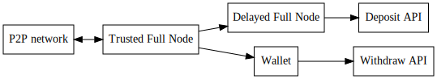

Step-By-Step Instructions for Exchanges¶
We here describe how to interface your exchange with BitShares step-by-step. We will link to a more detailed description where appropriate.
Warning
We recommend exchanges to disable BitShares 1.0 withdrawals and deposits before the snapshot takes place (Di 13. Okt 13:00:00 UTC 2015) and re-enable both after successfull migration to BitShares 2.0!
Installation¶
In this step-by-step instruction we assume you have successfully built from the sources according to:
Running Daemons and Wallet¶
For security reasons we will run two daemons and a wallet according to these diagram:

In this tutorial we will run all deamons and the wallet on the same machine and use different ports to distinguish them:
- port
8090: trusted full node - port
8091: delayed node - port
8092: wallet
Trusted Full Node¶
The trusted full node is your entry point to the BitShares P2P network. It will hold the blockchain, connect to other peers, and will receive new blocks in real-time.
./programs/witness_node/witness_node --data-dir=trusted_node/ --rpc-endpoint="127.0.0.1:8090"
Note
Until the genesis block is integrated into the binary/souces, you may
additionally need to download the genesis block from github and add the
parameter --genesis-json <genesis.json>. (See Release Page)
Note
Unless the seed nodes are encoded into the binary, you may need to add
a known seed node with -s xxx.xxx.xxx.xxx:yyy in order to initially
connect to the P2P network. (See Release Page)
Delayed Node¶
The delayed full node node will provide us with a delayed and several times confirmed and verified blockchain. All transactions that are confirmed by the delayed node are irreversible.
./programs/delayed_node/delayed_node --trusted-node="127.0.0.1:8090" \
--rpc-endpoint="127.0.0.1:8091"
-d delayed_node \
-s "0.0.0.0:0" \
--p2p-endpoint="0.0.0.0:0" \
--seed-nodes "[]"
We will use this node for notifications of customer deposits.
Wallet¶
The wallet will be used to transfer assets to the customers. It connects to the trusted full node and has spending privileges for the hot wallet.
./programs/cli_wallet/cli_wallet --server-rpc-endpoint="ws://127.0.0.1:8090" \
--rpc-http-endpoint="127.0.0.1:8092"
Query blockchain for required data¶
We now use the open cli_wallet to issue transfers and query the blockchain
for more information. First of all, we create a new wallet and set a pass phrase::
>>> set_password <password>
Watching Deposits with Python¶
We will make use of the Python-Graphene library available at github and configure it for notification on account changes for our deposit account above.
A detailed descriptions about the python library can be found in the
python-graphenelib documentations.
Installation¶
git clone http://github.com/xeroc/python-graphenelib
cd python-graphenelib
easy_install-3.4 install autobahn
easy_install-3.4 install requests
python3 setup.py install --user
cd scripts/monitor-deposits
Configuration¶
Move config-example.py to config.py and modify it accordingly:
mv config-example.py config.py
# edit config.py:
host = "127.0.0.1:8091" # 8091 is the delayed node
port = 8091
user = "" # keep empty
password = "" # keep empty
accountID = "<statistics>"
memo_wif_key = "<memo_private_key>"
last_op = "1.11.0" ## keep as is
Running¶
The monitoring script can be executed via
python3 monitor.py
Every time a deposit was made into your account a new line will appear similar to::
last_op: 1.11.1241 | block:12425 | from xeroc -> to: deposit | fee: 10 BTS | amount: 100 USD | memo: AFCE98ED
If you run into errors you can continue processing from the last operation
(first column) by defining last_op in config.py according to your last
registered deposit.
Executing Transfers for Withdrawals¶
Since we have imported the active key for our account into the wallet we can either initiate transfers from the wallet CLI with::
>>> transfer <account-name> <customer-account-name> <amount> <asset> <memo> <broadcast>
# e.g.
>>> transfer myexchange xeroc 100 USD "withdrawal myexchange" true
Make sure to add a true at the end so that the signed transaction is
broadcast in the P2P network.
Alternatively you can interface with the wallet and initiate the transfer via
API call (example in scripts/flood.py)
from grapheneapi import GrapheneAPI
if __name__ == '__main__':
client = GrapheneAPI("localhost", 8092, "", "")
res = client.transfer("myexchange","xeroc","0.00001", "USD", "withdrawal myexchange", True);
print(res)